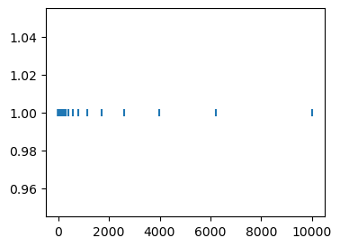

Numpy Basics#
To get started, install numpy using pip or conda package managers, or make sure that you have a recent version of numpy in your active Python environment.
# as usual, import the module
import numpy as np # np is the standard name of numpy
1. Arrays#
The fundamental object in numpy are numpy arrays, np.arrays. They are iterable objects which behave much like lists. They can have many dimensions. Create an array as follows.
a = np.array([1, 2, 3]) # create a numpy array from a list
A = np.array([[1, 2, 3], [4, 5, 6]]) # create a 2-d array from a list with two lists
print("a = ", a, '\n', "A = ", A, sep="") # extra bit of python: sep argument in print function defines the separating string
a = [1 2 3]
A = [[1 2 3]
[4 5 6]]
You cannot create numpy arrays from any kind of list. If your list contains integers and floats, integers will be ‘up-cast’ to the float datatype. If your list contains string, all else will be up-cast to string. What if it contains another datatype, like a list? Brace for an error.
print("an up-cast array to float: ", np.array([1.2, 1, 3]))
print("an up-cast array to str: ", np.array(['1.2', 1, 3]))
#print("something illegal: ", np.array([1, 2, 3, [1, 2]]) ) # this will throw an error
an up-cast array to float: [1.2 1. 3. ]
an up-cast array to str: ['1.2' '1' '3']
Exercise: Use the ‘dtype’ argument to save the list [1.9, 1, 3] as a numpy array consisting of str/float/int/bool. What do you notice in the int-case? In the bool-case?
print("Begin with list: ", [1.9, 1, 3])
print("forced data-type to str: ", np.array([1.9, 1, 3], dtype=int))
print("forced data-type to int: ", np.array([1.9, 1, 3], dtype=str))
print("forced data-type to int: ", np.array([1.9, 1, 3], dtype=bool))
Begin with list: [1.9, 1, 3]
forced data-type to str: [1 1 3]
forced data-type to int: ['1.9' '1' '3']
forced data-type to int: [ True True True]
For Reference: Data Types
| Data type | Description |
|---|---|
bool_ |
Boolean (True or False) stored as a byte |
int_ |
Default integer type (same as C long; normally either int64 or int32) |
intc |
Identical to C int (normally int32 or int64) |
intp |
Integer used for indexing (same as C ssize_t; normally either int32 or int64) |
int8 |
Byte (-128 to 127) |
int16 |
Integer (-32768 to 32767) |
int32 |
Integer (-2147483648 to 2147483647) |
int64 |
Integer (-9223372036854775808 to 9223372036854775807) |
uint8 |
Unsigned integer (0 to 255) |
uint16 |
Unsigned integer (0 to 65535) |
uint32 |
Unsigned integer (0 to 4294967295) |
uint64 |
Unsigned integer (0 to 18446744073709551615) |
float_ |
Shorthand for float64. |
float16 |
Half precision float: sign bit, 5 bits exponent, 10 bits mantissa |
float32 |
Single precision float: sign bit, 8 bits exponent, 23 bits mantissa |
float64 |
Double precision float: sign bit, 11 bits exponent, 52 bits mantissa |
complex_ |
Shorthand for complex128. |
complex64 |
Complex number, represented by two 32-bit floats |
complex128 |
Complex number, represented by two 64-bit floats |
Source: Jake VanderPlas (2016), Python Data Science Handbook Essential Tools for Working with Data, O’Reilly Media.
Exercise: Explore the commands np.zeros, np.ones, np.full as follows:
- instantiate a
(2, 3, 4)array with each of the commands - select element
[0, 0, 2]for each object and set its value to100 - print each object.
A = np.zeros(shape=(2, 3, 4))
B = np.ones(shape=(2, 3, 4))
C = np.full((2, 3, 4), 4) # different syntax for full
for x in [A, B, C]:
x[0,0,2] = 100
# extra bit of python syntax:
# "abc" * 10 produces a string which repeats "abc" 10 times.
print(A, "\n ", "-" * 70, "\n", B, "\n ", "-" * 70, "\n", C)
[[[ 0. 0. 100. 0.]
[ 0. 0. 0. 0.]
[ 0. 0. 0. 0.]]
[[ 0. 0. 0. 0.]
[ 0. 0. 0. 0.]
[ 0. 0. 0. 0.]]]
----------------------------------------------------------------------
[[[ 1. 1. 100. 1.]
[ 1. 1. 1. 1.]
[ 1. 1. 1. 1.]]
[[ 1. 1. 1. 1.]
[ 1. 1. 1. 1.]
[ 1. 1. 1. 1.]]]
----------------------------------------------------------------------
[[[ 4 4 100 4]
[ 4 4 4 4]
[ 4 4 4 4]]
[[ 4 4 4 4]
[ 4 4 4 4]
[ 4 4 4 4]]]
Arrays have methods and attributes associated with them. An attribute is dtype, another attribute is shape. We will cover methods below.
print(A.dtype, "\n", A.shape, sep="")
float64
(2, 3, 4)
The command np.empty instantiates an empty array, the command np.empty_like instantiates some array which has the same dimension and data type as a given array. Empty arrays are computationally less wasteful to produce than e.g. np.zeros, if one replaces the elements in some process anyways. The print function called on an empty array produces mostly garbage, don’t worry about this.
The following two are equivalent: np.empty(shape = A.shape) and np.empty_like(A)
print(np.empty(shape = A.shape).dtype)
print(np.empty_like(A).shape)
print(np.empty((2, 3)))
float64
(2, 3, 4)
[[4.9e-324 9.9e-324 1.5e-323]
[2.0e-323 2.5e-323 3.0e-323]]
Array Indexing#
Indexing arrays is easy and best done by example. We can select elements by regular indexing and Boolean indexing:
A = np.matrix([[1, 2, 3], [4, 5, 6]]) # a matrix is basically a (n,m)-array
print(A)
# indexing
A[1,0] = A[1,0]*10 # multiply element [0,1] by 10
print(A)
# boolean mask
A[A < 3.2] = 0 # replace all elements < 3.2 by 0
print(A)
[[1 2 3]
[4 5 6]]
[[ 1 2 3]
[40 5 6]]
[[ 0 0 0]
[40 5 6]]
Note that above we created a np.matrix, which is in many ways similar to a numpy array. However, it has some methods associated with it which are specific for linear algebra. Additionally, some operators are interpreted differently. The asterisk * defines element-wise multiplication for arrays, but always refers to matrix-multiplication for matrices. Furthermore, when making a boolean comparison where only matrices are involved, the returned object will be a boolean matrix and also have matrix operations associated to it.
Note that the Boolean comparison is done element-wise on the elements of the matrix (here, A):
A > 10
matrix([[False, False, False],
[ True, False, False]])
Finally, we consider the difference between views and copies:
If we want to obtain a true copy of some array A, we need to enclose it in np.copy. Otherwise, we will obtain a view, which if called links back to the original object A.
A_copy = np.copy(A) # use the copy function to make A_copy, which DOES NOT change if we change A
# however, this LHS variable will 'point' to the elements of A_copy
# if we change stuff in A_copy[0,:], then the_first_row_of_A_copy changes
the_first_row_of_A_copy = A_copy[0,:]
print(the_first_row_of_A_copy)
A_copy[0,:] = np.arange(1, 4, 1) # np.arange(start, end, step) creates a sequence from start to (excluding) end, in 'step'-size
print(the_first_row_of_A_copy)
[0 0 0]
[1 2 3]
We can slice arrays in any dimensions using the usual i:j:k syntax: select every kth element from i to j.
Exercise:
- Write a function make_shift_mat which takes a number n and outputs the n by n shift matrix
- Create another function
make_nilpotent_matwhich takes as argument a list of integers[n_1, n_2, ..., n_m]and outputs the a matrix which has S_{n_1}, ..., S_{n_m} on the diagonal and is 0 in all other entries. - Then create a function
get_np_indexwhich takes in a nilpotent matrix N and calculates the (least) k, for which N^k = \mathbf{0} (the zero matrix)
HINT: To calculate a matrix product of two arrays A, B of conforming dimension, use A@B.
Solution:
# a solution with a loop
def make_shift_mat(n):
A = np.zeros([n,n])
for i in range(n-1):
A[i,i+1] = 1
return A
# an alternative way with slicing
def make_shift_mat(n):
A = np.zeros((n,n))
A[np.arange(n-1), np.arange(1,n)] = 1
return A
make_shift_mat(8)
def make_nilpotent_mat(dim_list):
B = np.zeros((sum(dim_list),sum(dim_list)))
start = 0
for n in dim_list:
end = start + n
B[start:end, start:end] = make_shift_mat(n)
start += n
return B
def get_np_index(M, max_iter=10_000):
M_copy = M.copy()
counter = 0
while not np.all(M_copy == 0):
counter += 1
M_copy = M_copy @ M
if counter >= max_iter:
print("NO NILPINDEX FOUND")
return None
print("NILPINDEX", counter+2)
return counter+2
def get_np_index(M, max_iter=10_000):
M_copy = M.copy()
for i in range(max_iter):
M_copy = M_copy @ M
if np.all(M_copy == 0):
print("NILPINDEX", i+2)
return i+2
print("NO NILPINDEX FOUND")
return None
M = make_nilpotent_mat([6, 2, 5])
get_np_index(M)
# check that it works
M @ M @ M @ M @ M @ M
NILPINDEX 6
array([[0., 0., 0., 0., 0., 0., 0., 0., 0., 0., 0., 0., 0.],
[0., 0., 0., 0., 0., 0., 0., 0., 0., 0., 0., 0., 0.],
[0., 0., 0., 0., 0., 0., 0., 0., 0., 0., 0., 0., 0.],
[0., 0., 0., 0., 0., 0., 0., 0., 0., 0., 0., 0., 0.],
[0., 0., 0., 0., 0., 0., 0., 0., 0., 0., 0., 0., 0.],
[0., 0., 0., 0., 0., 0., 0., 0., 0., 0., 0., 0., 0.],
[0., 0., 0., 0., 0., 0., 0., 0., 0., 0., 0., 0., 0.],
[0., 0., 0., 0., 0., 0., 0., 0., 0., 0., 0., 0., 0.],
[0., 0., 0., 0., 0., 0., 0., 0., 0., 0., 0., 0., 0.],
[0., 0., 0., 0., 0., 0., 0., 0., 0., 0., 0., 0., 0.],
[0., 0., 0., 0., 0., 0., 0., 0., 0., 0., 0., 0., 0.],
[0., 0., 0., 0., 0., 0., 0., 0., 0., 0., 0., 0., 0.],
[0., 0., 0., 0., 0., 0., 0., 0., 0., 0., 0., 0., 0.]])
Functions to Make Arrays#
Numpy has a few handy built-in methods to create arrays of different kinds. np.ones and np.zeros are such. Now we look at two more: np.linspace and np.logspace.
np.linspace(start=0., stop=100, num=20) # create a grid from 0 to 100 with 20 grid points
np.logspace(start=np.log(1), stop=np.log(100), num=20, base = np.e) # create a grid from 0 to 100 with 20 grid points but in logs
# the latter is equivalent to
lower = np.log(1) # np.log( . ) is the natural logarithm
upper = np.log(100)
np.exp(np.linspace(lower, upper, 20)) # use broadcasting here, see next section
array([ 1. , 1.27427499, 1.62377674, 2.06913808,
2.6366509 , 3.35981829, 4.2813324 , 5.45559478,
6.95192796, 8.8586679 , 11.28837892, 14.38449888,
18.32980711, 23.35721469, 29.76351442, 37.92690191,
48.32930239, 61.58482111, 78.47599704, 100. ])
The function np.arange is very similar to the native range() function:
np.arange(start=1, stop=20, step=3)
array([ 1, 4, 7, 10, 13, 16, 19])
2. Computations and Broadcasting#
One can do pretty much all basic computations on np.arrays and these will be applied elementwise. (These computations are also called vectorized functions.)
Let’s also consider some functions coming with numpy: np.exp, np.log, np.abs.
a = np.arange(1,10,2)
print(a)
# multiplication / addition with a scalar
print(a * 10)
print(a + 10)
# exponential function, log function
print(np.exp(a))
print(np.log(a))
b = np.array([-1,0,1])
print(np.abs(b))
[1 3 5 7 9]
[10 30 50 70 90]
[11 13 15 17 19]
[2.71828183e+00 2.00855369e+01 1.48413159e+02 1.09663316e+03
8.10308393e+03]
[0. 1.09861229 1.60943791 1.94591015 2.19722458]
[1 0 1]
We can add two np.arrays together element-wise in the obvious fashion. This is called ‘broadcasting’. My advice: While useful, try to avoid situations in which non-obvious broadcasting things can happen.
Instead of addition, we can perform above computations with multiplication * or exponentiation **, too.
An interesting way to leverage broadcasting is to use np.newaxis, which creates an additional yet empty dimension to an array. For example, let a = np.array([1, 2, 3]). Then a[:, np.newaxis] has shape (3, 1) and a[np.newaxis, :] has shape (1, 3). What does the following broadcasting procedure yield: B = a[np.newaxis, :] + a[:, np.newaxis]?
Think it through. If you repeat a[np.newaxis, :] on the second axis you get a (3,3) array. Same if you repeat a[:, np.newaxis] thrice on the first axis. Then, you add the two resulting matrices elementwise. That’s basically an outer product!
a = np.array([1, 2, 3])
print(a**2, "\n")
print(a[:, np.newaxis].shape, "\n")
print(a[np.newaxis, :] + a[:, np.newaxis], "\n")
print(a[np.newaxis, :] ** a[:, np.newaxis])
[1 4 9]
(3, 1)
[[2 3 4]
[3 4 5]
[4 5 6]]
[[ 1 2 3]
[ 1 4 9]
[ 1 8 27]]
Rules of Broadcasting
Now we have seen Broadcasting in action, let’s consider the rules that NumPy us using to determine how it operates on two arrays:
- Rule 1: If the two arrays differ in their number of dimensions, the shape of the one with fewer dimensions is padded with ones on its leading (left) side.
- Rule 2: If the shape of the two arrays does not match in any dimension, the array with shape equal to 1 in that dimension is stretched to match the other shape.
- Rule 3: If in any dimension the sizes disagree and neither is equal to 1, an error is raised.
Consider an operation on matrix and array. The shape of each is:
matrix.shape = (2, 3)array.shape = (3,)
Rule 1 tells us that array has fewer dimensions, so we pad it on the left with ones:
matrix.shape -> (2, 3)array.shape -> (1, 3)
Rule 2, tells us the first dimension disagrees, so we stretch itnsion to match:
matrix.shape -> (2, 3)array.shape -> (2, 3)
Now the shapes match, and we see the output of a ufunc operation will be (2, 3):
(Source PP4RS, 2023)
Above, we have seen rule 2 in action. Now look at rule 1:
# Example of padding
a = np.matrix([2, 2, 2])
b = np.array([1, 2, 3])
print(a.shape, b.shape) # look at the shape of array and matrix
(a + 0 * b).shape # look at the shape of the broadcasted result
(1, 3) (3,)
(1, 3)
Array Methods#
We spent a minute on useful methods (=functions) associated with numpy objects. First, we create an array. Then we reshapethe array. Then we consider some sum, max, min, mean commands.
a = np.arange(1, 100, 3.1234)
print(a.shape) # well, lets make this a (4, 8) array.
# the reshape method will first fill up the columns, for row 1, then for row 2, etc until all rows are filled
# an analogous reshaping occurs when looping through multiple dimensions.
a = np.reshape(a, (4, 8))
print(a.shape)
# global max
print(a.max())
# row max: take max over the first dimension
print(a.max(axis=0))
# column min: take min over the second dimension
print(a.min(axis=1))
# the mean and sum methods work completely analogously.
(32,)
(4, 8)
97.8254
[75.9616 79.085 82.2084 85.3318 88.4552 91.5786 94.702 97.8254]
[ 1. 25.9872 50.9744 75.9616]
Note: instead of using np.copy(a), we can always write a.copy() since copy() is a method of the numpy object.
Matrix Computations#
Of course we can use matrix algebra with numpy.
# transpose of A
A.transpose()
# multiply A to A'
A @ A.transpose()
np.dot(A, A.transpose()) # alternatively, use np.dot instead of @
matrix([[ 0, 0],
[ 0, 1661]])
3. The np.random Module#
The np.random module is a collection of functions able to generate random variables and fill array with those. For instance, np.random.uniform generates samples drawn from the uniform distribution. Can you guess what np.random.randint will give us?
u = np.random.uniform(low=0, high=1, size=100)
# random matrix
u = u.reshape(10,10)
# random matrix with integers
u_int = np.random.randint(low=0, high=101, size=100).reshape(10,10)
Exercise:
Write the function demean which takes two inputs, a numpy array A and axis defaulting to None. If axis is equal to the default, the function calculate the mean across all elements of A and subtract this mean from each element. If axis = i, then the function calculates the means of A along that axis and only demeans in this direction. For example, it calculates a_{i, j, k, l} - \bar a_{i, j, \cdot, l} if axis = 2. (This means the third dimension is used to calculate means.)
def demean(A, axis=None):
temp = np.asarray(A) # make sure A is a numpy array, keepdims does not work with matrices
A_mean = temp.mean(axis=axis, keepdims = True)
return A - A_mean # broadcasting rule 2 is our friend here
demean(A, axis=1)
matrix([[ 0., 0., 0.],
[ 23., -12., -11.]])
4. Other Exercises#
Exercise: Discretizing the asset space
Consider the situation in which we want to create an asset grid for the households in your favorite macro-model. Households choose assets from [\underline a, \infty), need to discretize this grid. Idea: there should be more grid points around \underline a, because policy function is more nonlinear here. But we also want some points for high a. Solution: double exponential transformation of uniformly spaced grid:
Write a function discretize_assets(amin, amax, n_a) which outputs an asset grid ranging from a_min to a_max with n_a grid points, where a_i is determined by the formula above.
# SOLUTION:
# write a function which discretizes the asset space
def discretize_assets(amin, amax, n_a):
# find ubar
ubar = np.log(np.log(amax - amin + 1)+1)
# make linar grid for the u's
grid_u = np.linspace(0,ubar, n_a)
# transform back to a
grid_a = amin + np.exp(np.exp(grid_u)-1)-1
return grid_a
grid_a = discretize_assets(0, 10_000, 50)
# visualize the grid
import matplotlib.pyplot as plt
# some useful plot defaults
plt.rcParams.update({'font.size' : 10, 'lines.linewidth' : 1.5, 'figure.figsize' : (4,3)})
# scatter plot of the grid
plt.scatter(grid_a, np.repeat(1, len(grid_a)), marker='|')
<matplotlib.collections.PathCollection at 0x116872290>
